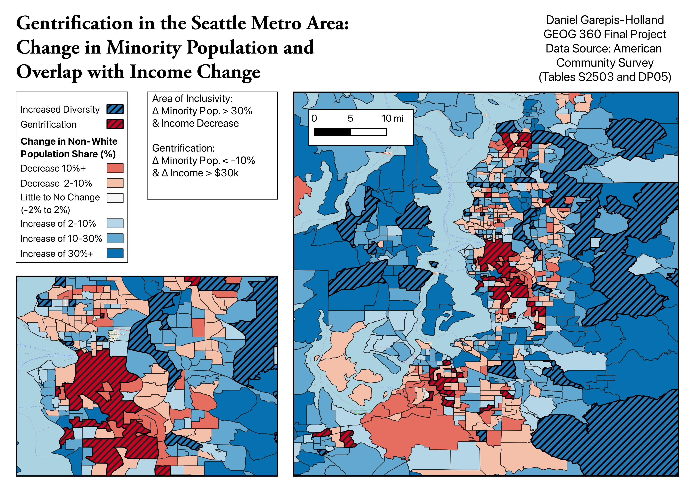
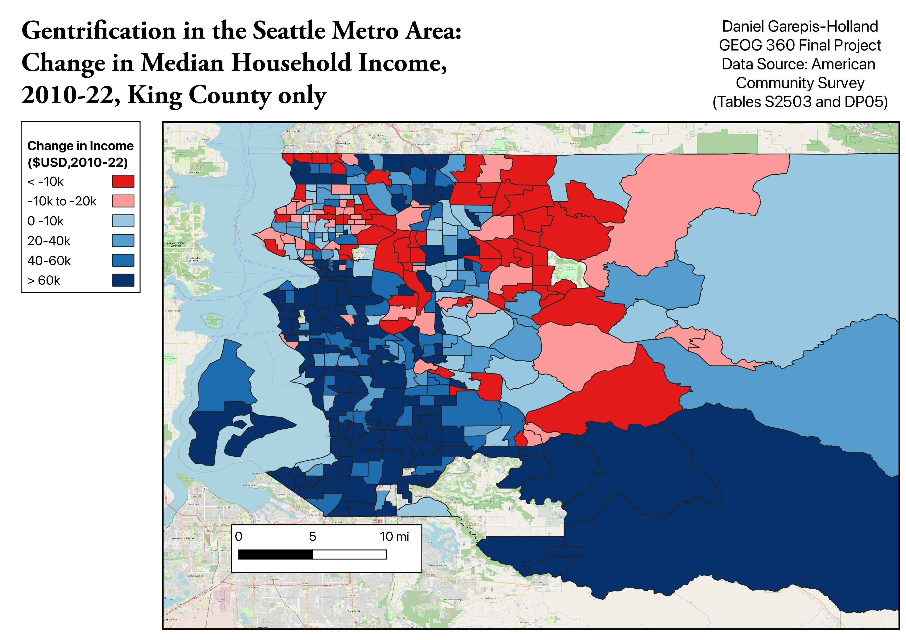

University of Washington
B.A. Political Science + B.A. Community, Environment & Planning
GPA 3.93, Dean's List. CEP Outreach Committee, GeoDat Society, ITE Club, Kappa Alpha Pi.Daniel Garepis-Holland
Creative work in photography, journalism, and design. Professional work in planning, policy, housing, and public communication.
Creative portfolio
Start here for the visual work: public space, campus rituals, sports, civic life, student journalism, and brand development.
Open full creative portfolioProfessional portfolio
A quick map of education and work, followed by project artifacts: planning materials, policy writing, GIS, audio, and public presentations.
B.A. Political Science + B.A. Community, Environment & Planning
GPA 3.93, Dean's List. CEP Outreach Committee, GeoDat Society, ITE Club, Kappa Alpha Pi.Student journalism, speech and debate, athletics, and campus publications
Cumulative GPA 4.0. The Paly Voice, Speech & Debate, Anthro Magazine, soccer, track & field.City of Brisbane, California
Staff reports, parking policy, outreach, and permit support.Interlake High School, Bellevue School District
Coaching, tournament logistics, finance, parent communication.UW Housing & Food Services
Administrative support, student service, procurement reporting.Eden Housing
Affordable housing site maps, evacuation plans, inspection tracking.California Department of Transportation
Construction communications and public event support.Associated work
Parking policy presentation work for a local Planning Commission meeting.
Agenda report and staff analysis for a local sign program amendment.
Open agenda reportStudio site planning work for a childcare feasibility study.
View archive entryStoryMap project on environmental conditions and neighborhood context.
Open StoryMapQGIS maps using ACS data to compare income and demographic change.


Policy writing on equity and school finance.
Open paperAudio project on Washington paid family and medical leave.
Open project notesPolitical science research paper.
Open paper